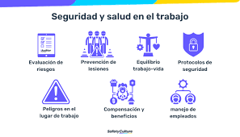
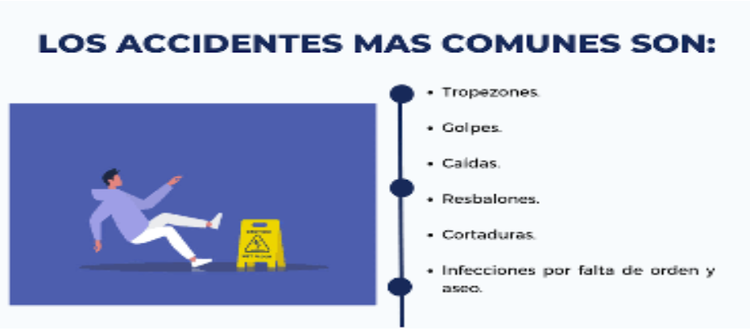
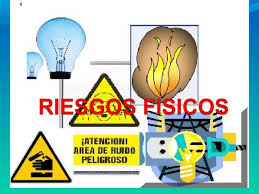
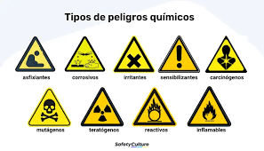

Condiciones laborales peligrosas y Salud laboral
¿Qué riesgos puedo encontrar en mi trabajo?
El trabajo nos permite satisfacer muchas de nuestras necesidades pero dependiendo de las condiciones en que se realiza, puede representar un peligro para nuestra salud.
Riesgo laboral: es la posibilidad de sufrir un determinado daño derivado del trabajo. Existen numerosos reglamentos que intentan evitar los daños en la salud (sobre señalización, manejo de cargas, pantallas de visualización, agentes biológicos, agentes cancerígenos, etc.)
Daños derivados del trabajo: son las enfermedades, patologías o lesiones sufridas con motivo u ocasión del trabajo.
Prevención: es el conjunto de actividades o medidas adoptadas o previstas en todas las fases de actividad de la empresa con el fin de evitar o disminuir los riesgos derivados del trabajo.

Riesgos ligados a las condiciones de seguridad
- El lugar y la superficie de trabajo: el orden y la limpieza son los principios básicos que propician la seguridad y evitan la mayoría de los accidentes
- Herramientas: las mas peligrosas son, martillos neumáticos taladradoras, motosierras, etc. Las principales causas de lesiones son debidas a su uso inapropiado, inadecuación de las mismas al trabajo a realizar, por estar defectuosas y por su alimacenamiento incorrecto.
- Máquinas: deben ser seguras (máquinas con el marcado CE); instalarse, utilizarse y mantenerse siguiendo las instrucciones del fabricante.
- La electricidad: recuerda las 5 reglas de oro
- Bloquear los aparatos de corte.
- Cortar todas las fuentes en tensión
- Verificar la ausencia de tensión
- Poner a tierra y en cortocircuito todas las posibles fuentes de tensión.
- Delimitar y señalizar la zona de trabajo.
Recuerda: electricidad + humedad= PELIGRO
- Los incendios: es importante la formación de los trabajadores, hacer simulacros y que cada trabajador sepa lo que tiene que hacer en una situación de emergencia .!
- Almacenamiento, manipulación y transporte: es preciso almacenar los materiales de forma correcta, evitando entrecruzamientos entre materiales y personas, manteniendo el puesto de trabajo ordenado y limpio disponiendo de la materia prima necesaria para la jornada.
- La señalización: la correcta señalización resulta eficaz como técnica de seguridad complementaria, pero no debe olvidarse que por si misma, nunca elimina el riesgo.
- Trabajos de mantenimiento: deben realizarse por trabajadores que tengan la formación adecuada. Los trabajos de mantenimiento deben ser planificados, eliminado realización de operaciones puntuales y deben ser realizados por personal especializado.

Riesgos físicos
- Los riesgos físicos más frecuentes en el lugar de trabajo son: ruido, vibración, radiación, y temperatura y humedad.
- 1. RUIDO
Las fuentes de ruido en la industria son numerosas pero principalmente hay que destacar los trabajos en fundiciones, carpinterías, fábricas textiles, sector del metal, etc.
Efectos: problemas de comunicación, disminución de la capacidad de concentración, somnolencia, alteraciones en el rendimiento laboral, sordera, taquicardia, aumento de la tensión arterial, trastornos del sueño, etc.
- 2. VIBRACIÓN
Las máquinas, herramientas y vehículos que originan vibraciones pueden ser aviones; barcos; vehículos industriales, carretillas; tractores y maquinaria agrícola; maquinaria y vehículos de obras públicas; plataformas vibrantes; herramientas manuales rotativas y percutoras como moledoras, pulidoras, lijadoras, motosierras, martillos pescadores, rompe-hormigones; etc.
Efectos: lumbalgias, lesiones de muñeca, codo, calambres, hormiguillo, disminución de la fuerza de agarre, etc.
- 3. RADIACIÓN NO IONIZANTE
Es la radiación incapaz de producir fenómenos de ionización. Se clasifican en:
* Radiación ultravioleta, emitida por soldaduras y corte con arco eléctrico; lámparas incandescentes, lámparas fluorescentes; tratamiento de pinturas, tintas, colas, etc. con rayos ultravioleta; desinfección; etc.
Efectos: quemaduras superficiales, enrojecimiento de piel, lesiones en ojos, etc.
* Radiación infrarroja, la fuente natural más importante es el sol, fuentes artificiales son los hornos, soplado de vidrio, lámparas incandescentes, llamas, etc.
Efectos: quemaduras en piel y ojos, cataratas, etc.
* Microondas y radiofrecuencias (campos electromagnéticos), las fuentes suelen ser los hornos microondas, los procesos de esterilización y soldadura, emisoras de radio y televisión, instalaciones de radar y telecomunicaciones, etc.
Efectos: aumento de la temperatura corporal, etc.
* Radiación láser, utilizado en cirugía, construcción, comunicaciones, etc.
Efectos: lesiones en retina, quemaduras, etc.
- 4. RADIACIÓN IONIZANTE
Es la radiación capaz de actuar sobre el cuerpo humano causando alteraciones de la célula y los tejidos.
El origen industrial de estas radiaciones puede encontrarse en los reactores nucleares, tubos de rayos x médicos y dentales, aceleradores de partículas, investigación de isótopos radioactivos, gammagrafía industrial, etc.
Efectos: dermatitis en manos, cataratas, cáncer, etc.
- 5. TEMPERATURA Y HUMEDAD
Las operaciones industriales que suponen condiciones severas de calor y humedad son, entre otras: fusión y colada de metales, hornos de caldera y combustión, forja y estampado en caliente, tratamientos térmicos, lavanderías industriales, trabajos al aire libre, etc.
Efectos:
· Ambientes fríos: malestar general, disminución de la destreza manual e intelectual, congelación de miembros, muerte por parada cardiaca.
· Ambientes calurosos: calambres, agotamiento, deshidratación, golpe de calor, quemaduras, etc.

Riesgos Químicos
Las sustancias químicas penetran en el organismo principalmente por inhalación, absorción de la piel o ingestión.
Los contaminantes químicos presentes en los procesos industriales son muy numerosos: en la pintura industrial, en la fabricación de abonos y plaguicidas, limpieza de instalaciones, combustión de hornos, calderas y motores, fabricación de plásticos, desengrasados de superficies metálicas, etc.
Efectos:
- Corrosión.- Producen destrucción parcial o total de los tejidos con los que contacta ( piel, ojos y sistema digestivo son las partes más afectadas).
- Irritación.- Los irritantes causan inflamación de los tejidos con los que contacta.
- Reacciones alérgicas.- Pueden ser dermatológicas o respiratorias, provocando cuadros de picores, rinitis, dermatitis de contacto, etc.
- Neumoconióticos.- Producen alteración crónica pulmonar por la inhalación prolongada de partículas.
- Asfixia.- Los axfisiantes ejercen su efecto al impedir la transferencia de oxígeno a los tejidos.
- Anestésicos y Narcóticos.- Actúan como depresores del sistema nervioso central provocando mareos, náuseas, etc, normalmente reversibles (disolventes industriales).
- Cáncer.- Los cancerígenos humanos conocidos son sustancias que actúan interfiriendo las funciones reproductoras o sexuales de la persona.
- Tóxicos sistémicos.- Son los agentes que causan lesiones en determinados órganos o sistemas específicos del organismo como cerebro, hígado, ríñón, pulmón etc.

Salvaguardar la salud, la seguridad y el bienestar de los trabajadores de la salud
La protección de la salud y seguridad de los trabajadores del sector salud mejora su productividad, satisfacción laboral y retención, además de ayudar a los establecimientos a cumplir con las leyes de seguridad ocupacional. Las condiciones laborales peligrosas generan costos elevados debido a enfermedades y accidentes. En 2017, estos costos en el sector salud y servicios sociales en Gran Bretaña fueron los más altos, con un estimado de US$ 3380 millones. A nivel mundial, mejorar la seguridad y bienestar de estos trabajadores reduce costos y daños ocupacionales, fortalece los sistemas de salud, y mejora la atención al paciente y la sostenibilidad.
Medidas normativas
Solo una tercera parte de los países disponen de algún tipo de instrumento normativo nacional para proteger la salud, la seguridad y el bienestar de los trabajadores de la salud. Según la experiencia de estos países, las siguientes intervenciones normativas han resultado ser eficaces para la protección de los trabajadores de la salud:
- actualizar o aprobar nuevas regulaciones, normas y códigos de buenas prácticas para la protección de la salud y la seguridad de los trabajadores de la salud;
- convertir la protección de la salud y la seguridad de los trabajadores de la salud en una parte integral de la gestión de la atención de la salud a todos los niveles;
- crear mecanismos y mejorar las competencias para la gestión de la salud y seguridad ocupacional en el sector de la atención de salud a nivel nacional, subnacional y de establecimientos de salud;
- ampliar la cobertura de los trabajadores de la salud con servicios de salud ocupacional competentes, que incluyan la evaluación y la gestión de riesgos, la vigilancia de la salud, la vacunación y el apoyo psicosocial
- y
establecer una relación de colaboración con las organizaciones de empleadores y trabajadores de la salud para mejorar las condiciones laborales.